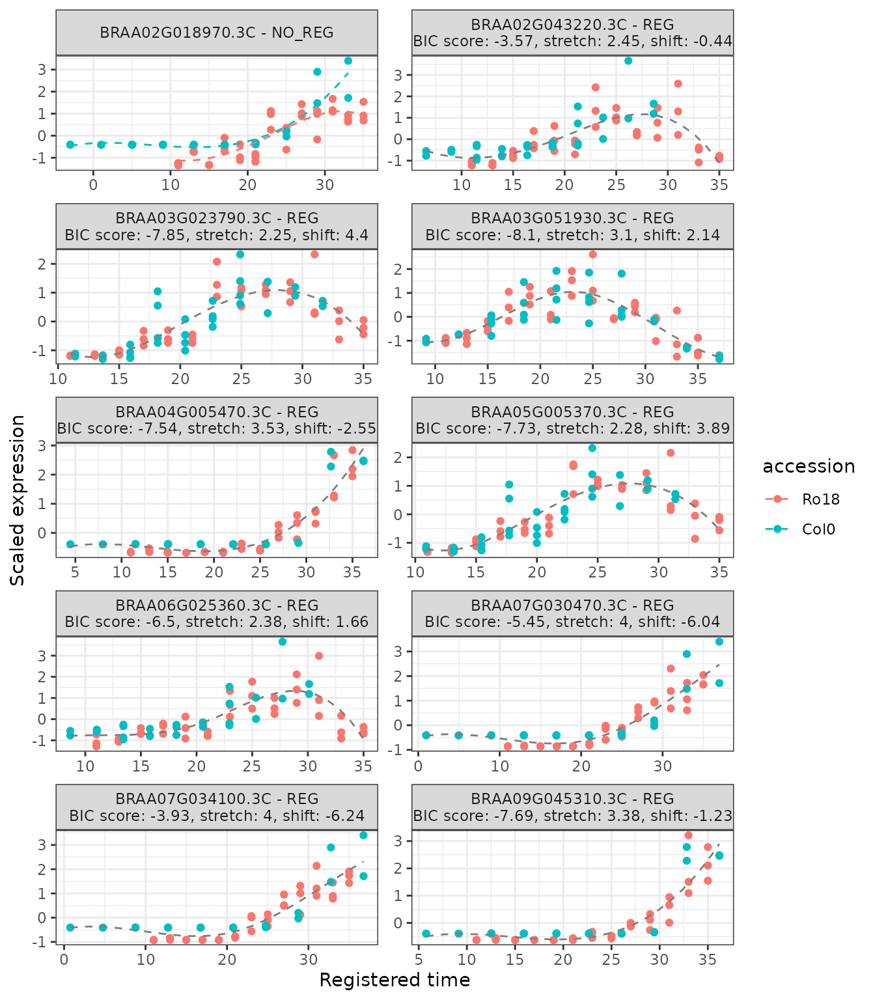
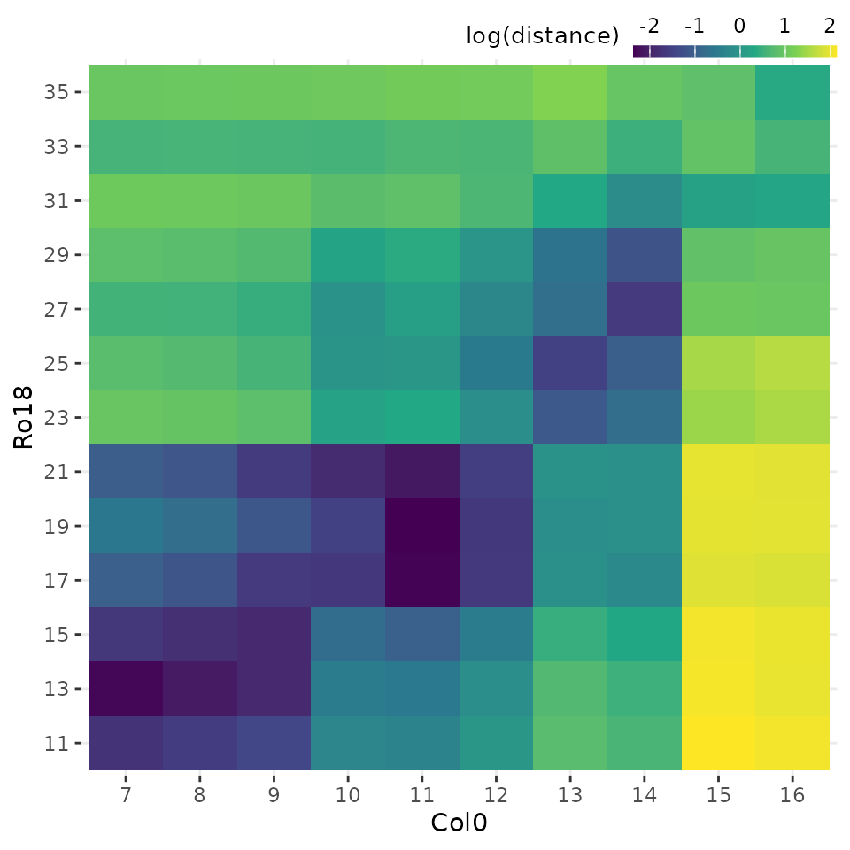
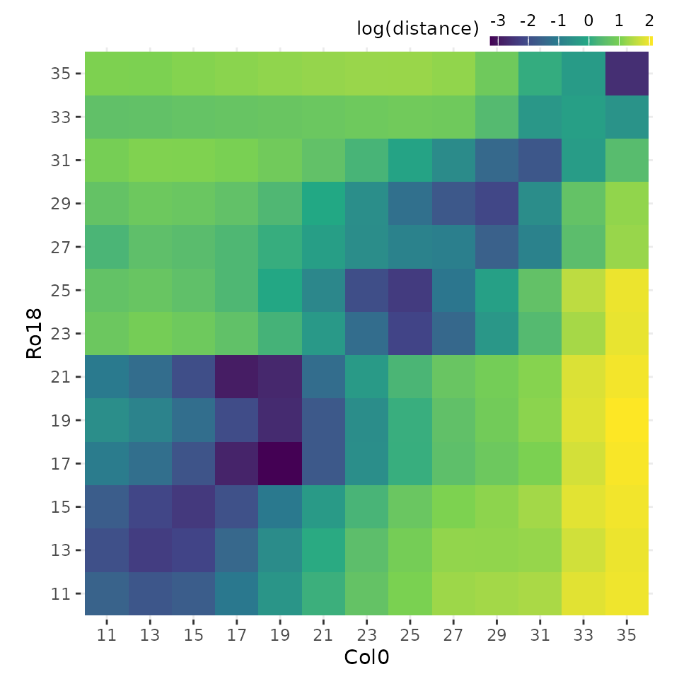

After running the registration function register() as
shown in the Registering
data article, users can summarise and visualise the results as
illustrated in the figure below.

Getting a summary from registration results
The total number of registered and non-registered genes can be
obtained by running the function summarise_registration()
with registration_results object as an input.
The function summarise_registration() returns a list
containing three different objects:
-
summaryis a data frame containing the summary of the registration results, -
registered_genesis a vector of gene accessions or IDs which were successfully registered, and -
non_registered_genesis a vector of non-registered gene accessions or IDs.
# Get registration summary
reg_summary <- summarise_registration(registration_results)
reg_summary$summary |>
knitr::kable()| Result | Value |
|---|---|
| Total genes | 10 |
| Registered genes | 10 |
| Non-registered genes | 0 |
| Stretch | [1.66, 4] |
| Shift | [-15.05, 8.46] |
The list of gene accessions which were registered or not registered can be viewed by calling:
reg_summary$registered_genes
#> [1] "BRAA02G018970.3C" "BRAA02G043220.3C" "BRAA03G023790.3C" "BRAA03G051930.3C"
#> [5] "BRAA04G005470.3C" "BRAA05G005370.3C" "BRAA06G025360.3C" "BRAA07G030470.3C"
#> [9] "BRAA07G034100.3C" "BRAA09G045310.3C"
reg_summary$non_registered_genes
#> character(0)Plotting registration results
The function plot_registration_results() allows users to
plot the registration results of the genes of interest.
# Plot registration result
plot_registration_results(
registration_results,
ncol = 2
)
Notice that the plot includes a label indicating if the particular genes are registered or not registered, as well as the registration parameters in case the registration was successful.
For more details on the other function paramaters, go to
plot_registration_results().
Analysing similarity of expression profiles overtime before and after registering
Calculate sample distance
After registering the data, users can compare the overall similarity
between datasets before and after registering using the function
calculate_distance().
sample_distance <- calculate_distance(registration_results)The function calculate_distance() returns a list of two
data frames:
-
registereddistance between scaled reference and query expressions using registered time points. -
originaldistance between scaled reference and query expressions using original time points.
Plot heatmap of sample distances
Each of these data frames above can be visualised using the
plot_heatmap() function, by selecting either
type = "registered" or type = "original".
# Plot heatmap of mean expression profiles distance before registration process
plot_heatmap(
sample_distance,
type = "original"
)
# Plot heatmap of mean expression profiles distance after registration process
plot_heatmap(
sample_distance,
type = "registered",
match_timepoints = TRUE
)
Notice that we use match_timepoints = TRUE to match the
registered query time points to the reference time points.